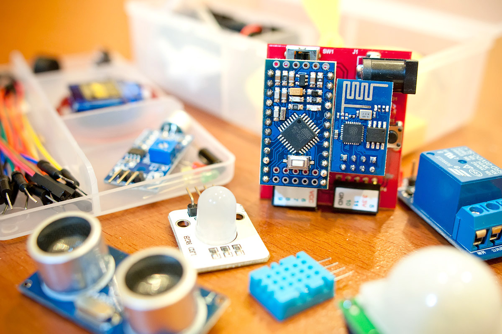
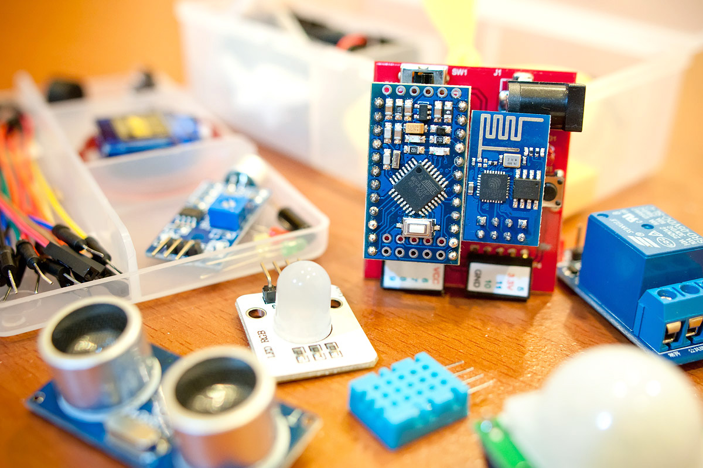

Webduino 開發包威力加強版
Webduino 開發包威力加強版主要針對較為進階的 Webduino 的開發者所設計，內容除了包含所有基本版的電子零組件之外，更額外添加了一些基本環境偵測的傳感器，可以應用在智慧家庭或智能監控的領域。
售價：
一盒新台幣 1,890 元整 ( 已含稅 )
購買：
選擇欲購買的數量後，點選「立刻購買」，將會開啟歐付寶線上支付頁面進行相關交易，實際價格包含 88 元的 7-11 宅配運費，購買前請先 閱讀購買須知以及退換貨說明，若欲購買五盒以上或其他方案，請 來信 洽詢，運費僅限台灣地區，外島與國外需另行支付運費，相關運費請也請來信詢問。
適用的開發板：
- Webduino 開發板 ( 馬克 1 號 )
材料包內容：
- 1. Webduino 開發板 ( 馬克 1 號 ) ×1 ( 目前已全面換成 mirco USB 電源輸入孔 )
- 2. 人體紅外線傳感器 ×1
- 3. 溫濕度傳感器 ×1
- 4. 聲音偵測傳感器 ×1
- 5. 蜂鳴器 ×1
- 6. 繼電器 ×1
- 7. 風扇馬達組 ×1
- 8. 震動開關 ×1
- 9. 超音波傳感器 ×1
- 10. 伺服馬達 ×1
- 11. 伺服馬達齒輪組 ×1
- 12. 三色 LED 燈 ×1
- 13. LED 燈 ×3
- 14. 按鈕 ×1
- 15. 1k 電阻 ×1
- 16. 麵包板 ×1
- 17.電線 ×1
- 18.杜邦接線 ×2
- 19.電池盒 ×1
- 20.包裝盒 ×1
電源輸入範圍：
5~6V，1~2A ( 目前已全面換成 mirco USB 電源輸入孔 )
產品照片：
 
